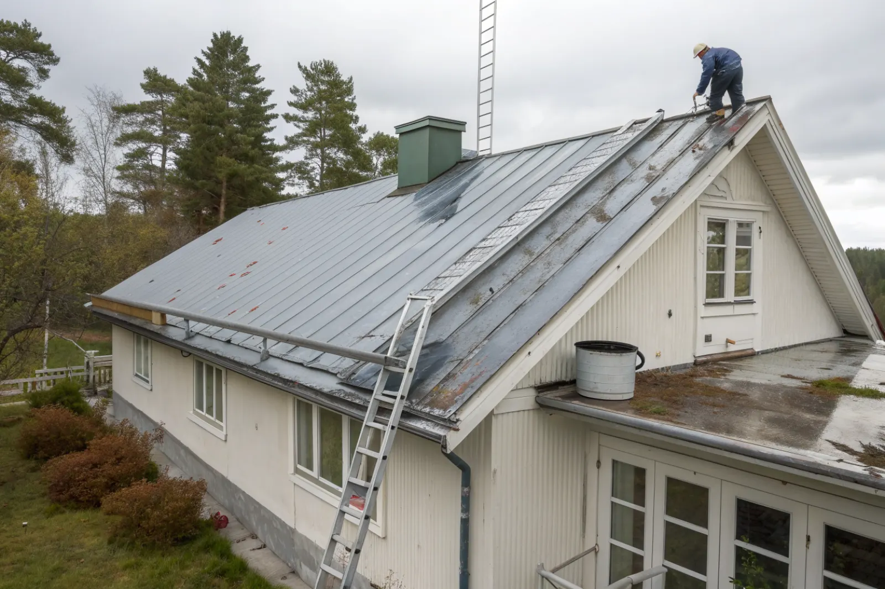
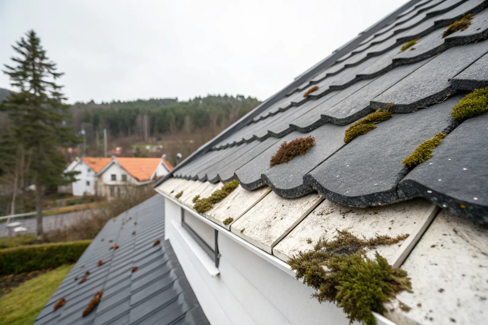

Besiktning
Vi bedömer rost, färgskikt, falsar och detaljer och berättar ärligt om målning räcker.
Ett plåttak som har börjat blekna, krita eller rosta behöver inte alltid bytas. Rätt utförd takmålning – tvätt, rostskydd och ett färgsystem för plåt – ger taket ett nytt skydd för många år framåt.
Takmålning passar när plåttakets ytskikt har slitits men själva plåten fortfarande är hel. Typiska tecken är att färgen har mattats och kritar (det blir vitt på fingret när du drar över ytan), att kulören har bleknat ojämnt, eller att det har uppstått rostprickar vid skruvar, falsar, nockar och vid takfoten. I det läget skyddar en ny färgfilm plåten innan rosten hinner äta sig igenom.
Målning är däremot fel åtgärd när plåten är genomrostad, när läckage redan har skadat underlagspapp och råspont, eller när taket ändå närmar sig slutet av sin livslängd. Då blir resultatet kortlivat och pengarna gör mer nytta i ett nytt tak. Därför börjar vi alltid med att gå upp på taket och titta – inte med att räkna kvadratmeter.
Osäker på skicket? En takbesiktning ger ett skriftligt underlag. Är taket uttjänt läser du mer om nytt plåttak.

Ett plåttak på en villa i Stockholmsområdet målas vanligen om med 10–20 års mellanrum, beroende på färgsystem, väderstreck och hur mycket träd som står runt huset. Söderläge och mycket sol bryter ner färgen snabbare, medan skuggiga tak under björk och tall får mer påväxt och fukt.
Vänta inte tills rosten syns från gatan. Ytrost som åtgärdas tidigt kostar lite, medan rost som har gått igenom plåten kräver lagning eller byte av hela plåtar.
Vi bedömer rost, färgskikt, falsar och detaljer och berättar ärligt om målning räcker.
Vi skyddar fasad, rabatter och fönster och tvättar taket med lågtryck och rengöringsmedel.
Rost borstas ner till fast underlag och grundas med rostskyddsgrund.
Falsar, skarvar och genomföringar ses över och tätas vid behov.
Grund- och täckfärg i rätt skikttjocklek enligt tillverkarens system.
Vi går igenom resultatet med dig och dokumenterar arbetet.
Det finns ingen färg som passar alla tak. Valet beror på vilken plåt taket är gjort av och hur det är behandlat sedan tidigare. Varmförzinkad plåt, plastbelagd plåt (till exempel polyester eller PVC-belagd profilplåt) och äldre målad plåt kräver olika förbehandling och grundfärg för att färgen ska fästa.
Vi följer alltid färgtillverkarens system – samma tvättmedel, grund och täckfärg som är provade ihop – och lägger färgen i rätt skikttjocklek. Det är den vanligaste orsaken till att en takmålning håller i 5 år i stället för 15: för tunt lager eller fel grund på fel plåt.
Vill du byta kulör går det bra. Mörka kulörer som svart och grafit är vanligast på villor i Bromma, Spånga och Sollentuna, men tegelröd och grön förekommer också – särskilt på äldre hus där kulören bör passa husets epok.
Falsade plåttak (bandtäckning) har ofta trettio, fyrtio år på nacken på villor från 1950–70-talen. De går i regel utmärkt att måla, men falsarna måste kontrolleras. Är en fals öppen eller rostig tätas den innan målning – annars kan vatten tränga in under färgen.
Profilplåt (trapetsprofil) har skruvar med gummibricka som torkar ut med åren. Vid målning byter vi skruvar och brickor där de har släppt. Vi ser också över hängrännor och stuprör, ventilationshuvar och plåt runt skorstenen, eftersom det är där läckage oftast börjar.
Betongpannor kan behandlas med en särskild takfärg för betong, men det förlänger främst utseendet – inte pannornas tekniska livslängd. Är pannorna porösa eller underlagspappen gammal hjälper inte färg mot läckage. Tegeltak målar vi inte: teglet behöver kunna andas, och färg kan göra att fukt stängs inne och att pannorna fryser sönder.
Har du betong- eller tegeltak med mossa och smuts räcker det oftast med taktvätt och behandling mot påväxt. Läs mer i guiden mossa på taket.

Kostnaden beror på takets storlek och lutning, hur mycket rost som måste åtgärdas, om falsar behöver tätas, vilken färg som används och hur lätt det är att komma åt taket med ställning eller lift. Två tak med samma yta kan därför få helt olika pris.
Vi publicerar inga fasta priser. I stället kommer vi ut gratis, tittar på taket och lämnar ett skriftligt kostnadsförslag med vad som ingår – tvätt, rostbehandling, antal färgskikt, kulör och ställning. Då kan du jämföra offerter på lika villkor.
Jämfört med ett nytt plåttak är målning i regel en bråkdel av kostnaden, förutsatt att plåten är frisk. Det är därför det lönar sig att måla i tid.
Arbetskostnaden för takmålning på din villa ger ROT-avdrag. Vi gör avdraget direkt på fakturan, så du betalar bara din del. För 2026 är ROT-avdraget 30 % av arbetskostnaden, med ett tak på 50 000 kr per person och år. Läs mer i vår guide om ROT-avdrag för takarbete.
Takfärg behöver torr plåt och plusgrader för att härda rätt. I Stockholmsområdet målar vi normalt från maj till och med september. Vi planerar efter väderprognosen och väntar hellre en dag än målar på fuktig plåt.
Planera gärna under vintern och våren – då hinner vi göra besiktningen och boka in arbetet innan högsäsongen.
Funkisvillor och 50-talshus med falsade plåttak.
Bromma →Villor i Duvbo, Lilla Alby och Ör.
Sundbyberg →Villaområden från 50- till 70-talet.
Spånga →Större villor med svart bandtäckt plåt.
Danderyd →Plåt och betong på 60–70-talsvillor.
Sollentuna →Havsnära tak som utsätts för saltluft.
Lidingö →Rengöring innan målning eller som eget underhåll.
Taktvätt →Nytt plåttak när målning inte räcker.
Plåttak →Skriftligt underlag innan du bestämmer dig.
Takbesiktning →Hur länge plåt, betong och tegel håller.
Livslängd per takmaterial →När det lönar sig och hur det går till.
Måla plåttak – guide →